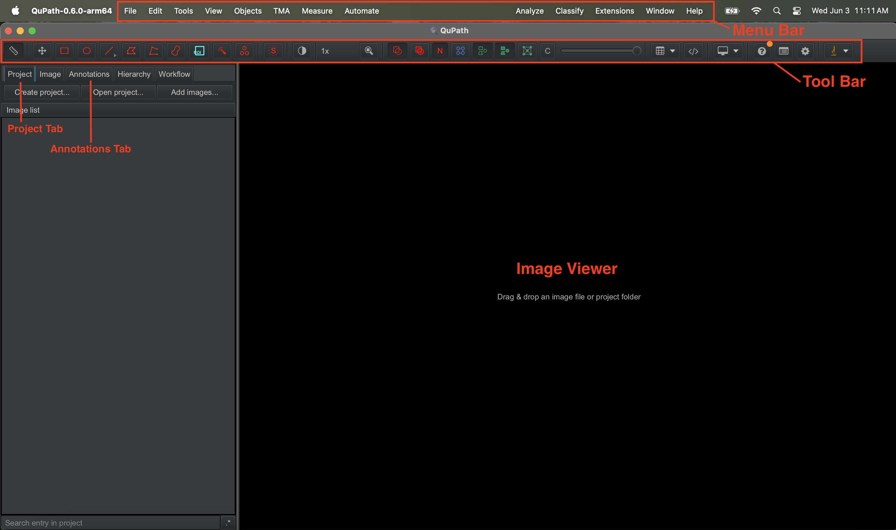

Setup
Installing QuPath
QuPath (version ≥ 0.6.0) must be installed to start using the ARTisto extension. QuPath can be installed from their website.
Once QuPath is installed, open QuPath and finish initial setup.
Getting familiar with the layout
To use this guide effectively, it is recommended to be familiar with the following terms.
The QuPath window will look as such:

The menu bar contains the Extensions menu from which you can access the ARTisto extension once installed. The View menu provides viewer options that may be helpful, such as adjusting brightness.
The image viewer shows you the currently opened image, allowing you to pan and zoom.
The tool bar contains annotation tools and settings for working in the viewer.
The left sidebar houses multiple tabs with different purposes. Notable tabs include the Project and Annotations tabs.
Installing the extension
Have the extension jar file downloaded.
Important note for reinstalling: To reinstall/update, the old jar file must be removed first. To delete the old jar, go to the menu bar and select Extensions → Manage extensions to open the Extension Manager. Scroll down to find the extension, and press the Delete extension button .
To install the ARTisto extension, drag and drop the jar file onto the QuPath window.
You may need to restart QuPath for the extension to register.
Check that ARTisto is installed by finding Extensions → ARTisto in the menu bar.
ARTisto setup
You must log in to use ARTisto.
Open the ARTisto menu by navigating to the menu bar and selecting Extensions → ARTisto → Open ARTisto.
This will open the ARTisto menu. Pressing Login at the top will open a prompt in the browser.
Epivara users should select the Continue with Google option and use their company Google login.
Outside users should create a new account by pressing Sign up. If you are denied access, contact an Epivara administrator to have an account created.
Setting up Cloud Slide viewing
The ARTisto extension provides a way to stream slide images from an AWS S3 bucket. Other connections are not supported at this time.
To set up, in the menu bar, select Extensions → ARTisto → Open from Cloud. This opens a form to specify a connection.
For Legacy Epivara users:
- This form should come populated with defaults for Epivara. Press Sign in with AWS to continue.
- Login with your Epivara company email (including the @epivara.com) as the username. Usernames have already been created for Epivara emails created before 05/2026.
- On your first time signing in, you will need to create a password. Select Forgot Password? and follow the instructions to reset your password.
- Once your password is created, return to QuPath and retry the login by cancelling the old browser login request and pressing Sign in with AWS again.
For New Epivara Employees and outside users:
- Contact an Epivara admin to create a user for you.
- Alternatively, use your own AWS connection.
Once logged in, the menu should show cloud-hosted slide images which you can view and add to your projects.
Disclaimer: Only .tiff images are supported at this time.